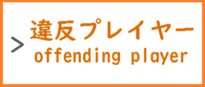
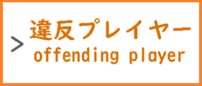

Minecraft 参加型
★ ＭＥＮＵ ★


 


Minecraft 参加型
※Discordに参加出来ない方への参加方法です。
ゲーマータグ Ubukata sana
ワールドでは、アドオンを使用してます。
サバイバルやクリエイティブで建築したりします。
開閉時間・予定
※毎週更新予定です。・更新されていない場合があります。
※急遽予定を変更する場合もあります。
| 開閉時間【 平日 】夕方・夜のみ |
不定期～23:00,24:00 |
| 開閉時間【 土日・祝日 】朝・昼 |
不定期・開かない場合があります。 |
| 開閉時間【 土日・祝日 】夕方・夜 |
13:00,14:00～18:00 |
| クリエ ➩ クリエイティブ |
建築クリエイティブ・配信無し |
| サバ【 夜 】➩ サバイバル・19:00～ |
建築サバイバル・LIVE配信予定 |
| 開閉曜日 |
開閉日時 |
ワールド情報 |
開閉可能かどうか |
| 月曜 |
03/04 |
クリエ |
🔴 |
| 火曜 |
03/05 |
クリエ |
🔴 |
| 水曜 |
03/06 |
クリエ |
🔴 |
| 木曜 |
03/07 |
クリエ |
🔴 |
| 金曜 |
03/08 |
クリエ |
🔴 |
| 土曜 |
03/09 |
クリエ・サバ【 夜 】 |
🔴 |
| 日曜 |
03/10 |
クリエ・サバ【 夜 】 |
🔴 |
こねこP公式サイト編集部 2023 - 2024